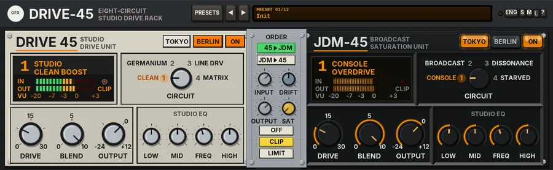

Drive-45
An eight-circuit studio drive: two half-rack saturation units in series, each with four circuits, a blend and its own three-band EQ.

Overview
Drive-45 is studio and broadcast saturation for tracks and buses, not stompbox fuzz. Two half-rack units are bolted together by a central mounting bracket, and each has four circuits to choose from, so there are eight in all.
On the left, DRIVE 45 (STUDIO-VERZERRER) is in the spirit of East German studio lab gear and transistor research: a clean boost into a transformer, a germanium console stage, an op-amp line driver and a transistor matrix. On the right, JDM-45 (BROADCAST-SÄTTIGUNGSEINHEIT) is in the spirit of Japanese high-end consoles and broadcast modifications: a console channel overdrive, a transmitter-style clipper, a harmonic exciter-like circuit and a stage on a starved supply.
The two units run in series, in either ORDER. Each one has DRIVE, BLEND (for parallel drive), OUTPUT and a three-band EQ after the circuit. Every circuit is level matched, so turning DRIVE changes the character far more than the loudness, and you can judge the sound fairly. The whole drive runs at four times the sample rate to keep the distortion clean of aliasing.
The TOKYO / BERLIN keys on each unit change only the faceplate and its print (English or German), not the sound.
Reach for it for
- Warmth and glue on mix buses and drum buses
- Weight and growl on bass and kick
- Bite and crack on snares and drum rooms
- Console-style colour and presence on vocals
- Parallel crunch, blended in under the clean signal
- Edge and harmonics on synths and keys
The eight circuits
DRIVE 45
- 1 STUDIO CLEAN BOOST
- BERLIN: STUDIO-VERSTÄRKUNG. Transparent op-amp gain into a studio transformer. The transformer core saturates the lows first, so bass thickens and rounds off while the mids and highs stay clean; only the loudest peaks are rounded by the op-amp's rails. The gentlest circuit: use it for weight and a touch of glue on anything.
- 2 GERMANIUM CONSOLE
- BERLIN: GERMANIUM-PULT. An asymmetric germanium stage: one half of the wave bends early and the other late, giving a warm second harmonic. The bias floats with the level and the supply sags a little, so loud passages are softly held down. Warm, round and gluey: good on buses, drums and bass.
- 3 OP-AMP LINE DRIVER
- BERLIN: OP-AMP-LEITUNGSTREIBER. A studio op-amp pushed out of its rails, with a presence lift before it. Its limited speed turns loud high frequencies triangular and edges into ramps, and then it clips hard on slightly unequal rails. Bright and aggressive: for snares, rooms and anything that needs to cut.
- 4 TRANSISTOR MATRIX
- BERLIN: TRANSISTOR-MATRIX. Three transistor stages in a row, each with its own bias and filtering, sharing the drive between them. The harmonics pile up thick and dense, and the top rounds off stage by stage. Heavy and saturated: for bass, synths and full-on distortion.
JDM-45
- 1 CONSOLE OVERDRIVE
- BERLIN: PULT-ÜBERSTEUERUNG. A console channel amplifier: perfectly clean up to its knee, then a smooth, slightly uneven soft clip, with the channel's faint second harmonic. Polished, expensive-sounding drive for vocals, keys and buses.
- 2 BROADCAST LIMITER DRIVE
- BERLIN: RUNDFUNK-BEGRENZER. The classic transmitter clipper: the highs are lifted, the signal is clipped hard and evenly, then the highs are put back. Transients and sibilance are slammed first, with odd harmonics. Loud, flat and punchy: for drums that need to hit hard.
- 3 HARMONIC DISSONANCE
- BERLIN: HARMONISCHE DISSONANZ. The part of the signal above 700 Hz is folded (rectified) and mixed back in, more with more DRIVE, and the sum is saturated. It adds upper harmonics and a rough, ringing edge: presence and bite on synths and guitars. Use BLEND to set how much.
- 4 STARVED RAIL
- BERLIN: UNTERSPANNUNG. A stage on a weak supply: the rail sags as the signal draws current (it compresses), the bias slides as it sags (asymmetric and dense), and quiet signal round zero is lost in a soft dead zone, so decays sputter out, almost like a gate. Broken and characterful: for kicks, bass and lo-fi effects.
Controls
The header
- PRESETS
- Opens the full preset list.
- ◄ / ►
- Step to the previous or next preset (wrapping round).
- Preset display
- Shows the preset number and name. Click it for the preset list too.
- S / M / L
- Panel size: small, medium or large. The panel also scales to fit the plugin window.
- ?
- Opens a pop-up with the design credit, the GFX website address and the address of this manual. Click anywhere to close it.
Each unit's top row
- TOKYO / BERLIN
- The unit's faceplate. TOKYO is charcoal with a glowing display (cyan on DRIVE 45, amber on JDM-45) and English print. BERLIN is baked enamel (cream-grey on DRIVE 45, battleship grey on JDM-45) with German print and decimal commas. DRIVE 45 opens in BERLIN, JDM-45 in TOKYO. Looks only: the sound is the same.
- ON / EIN
- Switches the unit in or out (a 10 ms fade). When it is out, the signal passes that unit untouched. Both on by default.
The display
Shows the circuit's number and name, and two VU bars: IN (EIN) for the level going into the unit and OUT (AUS) for the level coming out, scaled -20 to +3 VU (0 VU = a sine peaking at -18 dBFS). The CLIP lamp lights red when the unit's output goes over full scale. The display dims when the unit is off.
CIRCUIT / SCHALTUNG
- CIRCUIT switch
- A four-way rotary switch: drag it, use the mouse wheel, or click a circuit's name. DRIVE 45: CLEAN / GERMANIUM / LINE DRV / MATRIX (BERLIN: REIN / GERMANIUM / LEITUNG / MATRIX). JDM-45: CONSOLE / BROADCAST / DISSONANCE / STARVED (BERLIN: PULT / RUNDFUNK / DISSONANZ / UNTERSPG.). Circuit 1 by default. Changing circuit crossfades over 15 ms, so you can switch while the music plays.
DRIVE, BLEND and OUTPUT
- DRIVE / ANTRIEB
- How hard the signal is pushed into the circuit, 0 to +30 dB (+8 dB by default). Because each circuit is level matched, the loudness stays roughly the same as you turn it; what changes is the amount of saturation.
- BLEND / MISCHUNG
- The mix of the driven circuit with the unit's own clean input, 0 to 100% (100% by default = fully driven). Lower settings give parallel drive: the clean transients stay and the saturation sits underneath. The dry and driven signals line up exactly, so there is no phasing.
- OUTPUT / PEGEL
- The unit's output level, -24 to +12 dB (0 dB by default).
STUDIO EQ / ENTZERRER
A three-band EQ on the unit's output, after the circuit, to shape the driven sound.
- LOW / TIEFEN
- A low shelf at 100 Hz, -15 to +15 dB (0 by default).
- MID / MITTEN
- A broad bell (Q 0.9) at FREQ, -15 to +15 dB (0 by default).
- FREQ
- The MID band's frequency, 200 Hz to 8 kHz (1 kHz by default).
- HIGH / HÖHEN
- A high shelf at 10 kHz, -15 to +15 dB (0 by default).
The bracket
- ORDER
- Two keys that set which unit comes first: 45 ► JDM (the default) or JDM ► 45. Changing the order dips the output for a moment while the units are re-patched.
- INPUT
- A trim before both units, -24 to +12 dB (0 dB by default). It pushes both circuits at once.
- DRIFT
- Component tolerance, 0 to 100% (50% by default). See Drift below.
- OUTPUT
- The final output level, -24 to +12 dB (0 dB by default).
- SAT
- Band saturation on the way out: only the lows and highs are saturated (the mids stay clean), with a soft curve that loosens as the level rises. 0% by default.
- OFF / CLIP / LIMIT
- The final stage: nothing, a soft clipper at -0.3 dBFS (no latency, the default), or a lookahead limiter that holds the peaks at -0.3 dBFS (3 ms latency, compensated by REAPER). While the output clips, the CLIP key flashes red.
The oversampling adds 37 samples of latency (under 1 ms at 48 kHz), which REAPER compensates automatically.
Level matching
Each circuit has unity gain for quiet signals whatever the DRIVE, and a calibration table, measured on music at -18 dBFS RMS, removes the loudness each circuit gains or loses as it is driven. So switching circuits or turning DRIVE up should not fool you with extra level. Use the units' OUTPUT knobs and the IN / OUT VU bars to fine-tune: when the two bars read about the same, the unit is level matched for your material.
Drift
DRIFT is component tolerance. The bias points and clip thresholds of every circuit wander slowly, the EQ frequencies wander a little, and the left and right channels never quite match (each instance gets its own small differences). This gives a wider, less sterile sound, like real hardware. At 0% the components are ideal and the two channels identical.
Knobs: drag up or down (Shift for fine moves) or use the mouse wheel; double-click to reset a knob to its default. While you touch a knob, its value replaces its name.
Presets
Presets set both units (ON, CIRCUIT, DRIVE, BLEND, OUTPUT and EQ), ORDER, INPUT and DRIFT. The TOKYO / BERLIN styles, the bracket OUTPUT, SAT and the output stage are left as they are. The list also has Reset all to defaults, which sets every control back to its starting value.
- Init
- Both units on, circuit 1 each at +8 dB, fully driven, EQ flat.
- Bus Warmth
- GERMANIUM CONSOLE and CONSOLE OVERDRIVE, both partly blended, with a little low lift and a soft top: gentle bus glue.
- Germanium Glue
- DRIVE 45 only: GERMANIUM CONSOLE at +14 dB with a little low lift and a dip at 320 Hz.
- Line Driver Snare
- The OP-AMP LINE DRIVER at +18 dB, partly blended, with less low end and a lift at 1.8 kHz and in the highs, then a light CONSOLE OVERDRIVE.
- Matrix Bass
- DRIVE 45 only: TRANSISTOR MATRIX at +16 dB, 80% blend, low lift, mid scoop at 500 Hz and a darker top.
- Console Vocal
- A light CLEAN BOOST into CONSOLE OVERDRIVE at +11 dB, with the lows and low mids trimmed and +2.5 dB of air.
- Broadcast Slam Drums
- GERMANIUM CONSOLE into the BROADCAST LIMITER DRIVE at +18 dB: loud, flat and punchy.
- Dissonant Synth
- TRANSISTOR MATRIX into HARMONIC DISSONANCE at +16 dB, 55% blend, with a lift at 3 kHz.
- Starved Kick
- JDM-45 only: STARVED RAIL at +20 dB with +3 dB low end and a deep cut at 400 Hz.
- Parallel Crunch
- The LINE DRIVER at +24 dB and the BROADCAST clipper at +20 dB, each blended in at about a third under the clean signal.
- Tokyo-Berlin Chain
- ORDER reversed: CONSOLE OVERDRIVE first, then GERMANIUM CONSOLE, both at +10 dB, with a little more drift.
- Full Melt
- TRANSISTOR MATRIX at +30 dB into STARVED RAIL at +26 dB, with heavy drift: total destruction.
Tips
- Try each circuit at the same DRIVE before tweaking: the level matching lets you compare them fairly.
- For parallel drive, set BLEND to 20 - 40% and push DRIVE high: the punch stays and the colour sits underneath.
- Use ORDER to choose which unit's character leads: the second unit hears the first one's harmonics and saturates them again.
- Use the units' EQ to tame the fizz a hard circuit adds (HIGH down) or to bring back the low end a clipper takes away (LOW up).
- On a mix bus, start with STUDIO CLEAN BOOST or GERMANIUM CONSOLE at modest DRIVE and switch the other unit off.
- Switch a unit off with ON / EIN to compare; set its OUTPUT so the loudness matches before judging.
File: gfx-drive-45.jsfx